Kernel source search:
/proc virtual file system/proc file system is a virtual file system that provides an interface to kernel data structures in a form that looks like files and directories on a file system./proc/PID, allows us to view information about each process running on the system./proc file system is said to be virtual because the files and subdirectories that it contains don’t reside on a disk. Instead, the kernel creates them “on the fly” as processes access them.per-process info:
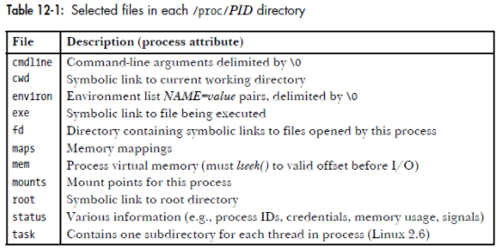
/proc/PID/fd
The /proc/PID/fd directory contains one symbolic link for each file descriptor that the process has open.
/proc/1968/1 is a symbolic link to the standard output of process 1968./proc/PID/task
For each thread in this process, the kernel provides a subdirectory named /proc/PID/task/TID, TID is the same number as would be returned by a call to gettid() in the thread.
/proc/PID/task/TID subdirectory is a set of files and directories exactly like those that are found under /proc/PID./proc/PID/task/TID/status files for a thread groupSystem-wide info:
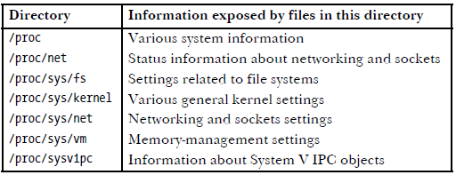
System-wide files related to performance observability include:
cpuinfo: Physical processor information, including every virtual CPU, model name, clock
speed, and cache sizes.diskstats: Disk I/O statistics for all disk devicesinterrupts: Interrupt counters per CPUloadavg: Load averagesmeminfo: System memory usage breakdownsnet/dev: Network interface statisticsnet/netstat: System-wide networking statisticsnet/tcp: Active TCP socket informationpressure/: Pressure stall information (PSI) filesschedstat: System-wide CPU scheduler statisticsself: A symlink to the current process ID directory, for convenienceslabinfo: Kernel slab allocator cache statisticsstat: A summary of kernel and system resource statistics: CPUs, disks, paging, swap,
processes and is used by many tools (vmstat(8), mpstat(1), sar(1), monitoring agents).zoneinfo: Memory zone informationThese are read by system-wide tools. For example, here’s vmstat(8) reading /proc, as traced by strace(1). The output shows that vmstat(8) was reading meminfo, stat, and vmstat.
open("/proc/meminfo", O_RDONLY) = 3
lseek(3, 0, SEEK_SET) = 0
read(3, "MemTotal: 889484 kB\nMemF"..., 2047) = 1170
open("/proc/stat", O_RDONLY) = 4
read(4, "cpu 14901 0 18094 102149804 131"..., 65535) = 804
open("/proc/vmstat", O_RDONLY) = 5
lseek(5, 0, SEEK_SET) = 0
read(5, "nr_free_pages 160568\nnr_inactive"..., 2047) = 1998
/sys virtual file systemLinux provides a sysfs file system (introduced with the 2.6 kernel), mounted on /sys. It provides a directory-based structure for kernel statistics. sysfs was originally designed to provide device driver statistics but has been extended to include any statistic type.
Some examples:
$ find /sys/devices/system/cpu/cpu0 -type f
/sys/devices/system/cpu/cpu0/uevent
/sys/devices/system/cpu/cpu0/hotplug/target
/sys/devices/system/cpu/cpu0/hotplug/state
/sys/devices/system/cpu/cpu0/hotplug/fail
/sys/devices/system/cpu/cpu0/crash_notes_size
/sys/devices/system/cpu/cpu0/power/runtime_active_time
/sys/devices/system/cpu/cpu0/power/runtime_active_kids
/sys/devices/system/cpu/cpu0/power/pm_qos_resume_latency_us
/sys/devices/system/cpu/cpu0/power/runtime_usage
[...]
$ grep . /sys/devices/system/cpu/cpu0/cache/index*/size
/sys/devices/system/cpu/cpu0/cache/index0/size:32K
/sys/devices/system/cpu/cpu0/cache/index1/size:32K
/sys/devices/system/cpu/cpu0/cache/index2/size:1024K
/sys/devices/system/cpu/cpu0/cache/index3/size:33792K
To view a system config
$ sysctl net.ipv4.tcp_sack
net.ipv4.tcp_sack = 1
To change a system config
$ sysctl -w net.ipv4.tcp_sack=0
net.ipv4.tcp_sack = 0
Settings are persisted in the /etc/sysctl.conf file, and in separate .conf files in the /etc/sysctl.d/ directory in later Red Hat releases. These files can be edited directly with a text editor. The values are applied at reboot.
$ echo 'net.ipv4.tcp_sack = 0' >> /etc/sysctl.conf
lib/string.c and architecture-specific headers are in arch/x86/include/asm.It has printk() instead of printf()
printk(KERN_ERR "this is an error!\n");
inline functions Kernel developers use inline functions for small time-critical functions.
Common practice is to place inline functions in header files. Because they are marked static, an exported function is not created. If an inline function is used by only one file, it can instead be placed toward the top of just that file.
inline assembly The asm() compiler directive is used to inline assembly code.
The Linux kernel is written in a mixture of C and assembly, with assembly relegated to low-level architecture and fast path code.The vast majority of kernel code is programmed in straight C.
Branch annotation The kernel wraps the directive in easy-to-use macros, likely() and unlikely().
These directives result in a performance boost when the branch is correctly marked, but a performance loss when the branch is mismarked.
When a user-space application attempts an illegal memory access, the kernel can trap the error, send the SIGSEGV signal, and kill the process. If the kernel attempts an illegal memory access, it is a major kernel error.
Additionally, kernel memory is not pageable. (will not be swapped out). Every byte of memory consume physical memory.
User-space stack is large and can dynamically grow.
The kernel stack is neither large nor dynamic; it is small and fixed in size.The exact size of the kernel’s stack varies by architecture. Historically, the kernel stack is two pages, which generally implies that it is 8KB on 32-bit architectures and 16KB on 64-bit architectures.
Each process receives its own stack.
The kernel is susceptible to race conditions.
Typical solutions to race conditions include spinlocks and semaphores.
architecture-independent C code must correctly compile and run on a wide range of systems, and that architecturedependent code must be properly segregated in system-specific directories in the kernel source tree.
A handful of rules—such as remain endian neutral, be 64-bit clean, do not assume the word or page size, and so on
The start of Unix
The start of BSD
The start of System V
Side bar: lawsuits between UNIX System Laboratories (USL, the AT&T subsidiary spun off to develop and market UNIX) and UC Berkeley.
The GNU project
emcas, gcc, glibc, bash.The Linux Kernel
Before v2.6, Two kernel versions were always under development:
Linux distributors, who created packages (distributions) to automate most of the installation process, creating a file system and installing the kernel and other required software.
The standardization of C
Situation:
Standard C89 (also often called ANSI C)
in 1989 with the approval of the American National Standards Institute (ANSI) C standard
(X3.159-1989), which was subsequently adopted in 1990 as an International Standards
Organization (ISO) standard. The standard defines the syntax and semantics of C, the operation of the standard C library, which includes the stdio functions, string-handling functions, math functions, various header files, and so on.
C99
A revision of the C standard was adopted by ISO in 1999. It includes the addition of long long and Boolean data types, C++-style (//) comments, restricted pointers, and variable-length arrays.
POSIX standard
Implementation standard
The Linux kernel approach: Instead of turning the structure into a linked list, the Linux approach is to embed a linked list node in the structure!
It is important to note that the pointers in a list_head field store the addresses of other list_head fields rather than the addresses of
the whole data structures in which the list_head structure is included;
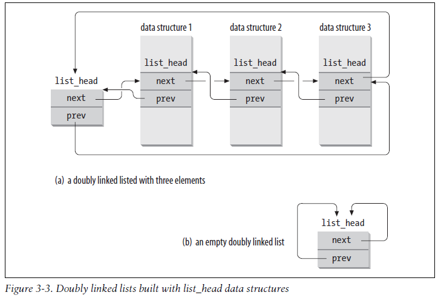
The linked-list code is declared in the header file <linux/list.h> and the data structure is simple:
struct list_head {
struct list_head *next
struct list_head *prev;
};
Usage example:
struct fox {
unsigned long tail_length; /* length in centimeters of tail */
unsigned long weight; /* weight in kilograms */
struct list_head list; /* list of all fox structures */
};
Using the macro container_of(), we can easily find the parent
structure containing any list_head. This is because in C, the offset of a
given variable into a structure is fixed by the ABI at compile time.
#define container_of(ptr, type, member) ({ \
const typeof( ((type *)0)->member ) *__mptr = (ptr); \
(type *)( (char *)__mptr - offsetof(type,member) );})
#define list_entry(ptr, type, member) \
container_of(ptr, type, member)
Armed with list_entry(), the kernel provides routines to create, manipulate, and manage linked lists, all without knowing anything about the structures that the list_head resides within.
Initialize the list
INIT_LIST_HEAD(&red_fox->list);
A special pointer that refers to your linked list, without being a list node itself.
static LIST_HEAD(fox_list);
Add a node to list
// To add the new node to the given list immediately after the head node.
// you can pass any element for head,
// but if you do pass the “last” element, however, this function can be used to implement a stack.
list_add(struct list_head *new, struct list_head *head)
// To add a node to the end of a linked list:
// This function adds the new node to the given list immediately before the head node.
// if you pass the “first” element, this function can be used to implement a queue
list_add_tail(struct list_head *new, struct list_head *head)
Traverse the list with list_for_each() macro. The macro takes two parameters, both list_head structures.
struct list_head *p;
struct fox *f;
list_for_each(p, &fox_list) {
/* f points to the structure in which the list is embedded */
f = list_entry(p, struct fox, list);
}
Most kernel code traverses the list with list_for_each_entry() macro. This macro handles the work
performed by list_entry(), making list iteration simple. An example:
static struct inotify_watch *inode_find_handle(struct inode *inode,
struct inotify_handle *ih)
{
struct inotify_watch *watch;
list_for_each_entry(watch, &inode->inotify_watches, i_list) {
if (watch->ih == ih)
return watch;
}
return NULL;
}
Itarate list while removing the element.
The Linux kernel provides list_for_each_entry_safe(pos, next, head, member). You use this version in the same manner as list_for_each_entry(), except that you provide the next pointer.The next pointer is used to store the next entry in the list, making it safe to remove the current entry. One example:
void inotify_inode_is_dead(struct inode *inode)
{
struct inotify_watch *watch, *next;
mutex_lock(&inode->inotify_mutex);
list_for_each_entry_safe(watch, next, &inode->inotify_watches, i_list) {
struct inotify_handle *ih = watch->ih;
mutex_lock(&ih->mutex);
inotify_remove_watch_locked(ih, watch); /* deletes watch */
mutex_unlock(&ih->mutex);
}
mutex_unlock(&inode->inotify_mutex);
}
The Linux kernel’s generic queue implementation is called kfifo and is implemented in kernel/kfifo.c and declared in <linux/kfifo.h>.
kfifo provides two primary operations: enqueue (named in) and dequeue (out).
kfifo object maintains two offsets into the queue: an in offset and an out offset.
Allocating Queue, size of the queue must be power of 2.
// dynamic create a fifo with PAGE_SIZE size
// use kfifo_free to destroy the queue later
struct kfifo fifo;
int ret;
ret = kfifo_alloc(&fifo, PAGE_SIZE, GFP_KERNEL);
if (ret)
return ret;
//use the buffer allcoated before when creating the queue
// This function creates and initializes a kfifo that will use the size bytes of memory pointed at by buffer for its queue.
// use kfifo_reset to clear the queue later
void kfifo_init(struct kfifo *fifo, void *buffer, unsigned int size);
//statically declaring a kfifo
DECLARE_KFIFO(name, size);
INIT_KFIFO(name);
Enqueuing Data
// This function copies the len bytes starting at from into the queue represented by fifo.
// The function only copies up to the avaialble bytes, the return value can be less than the len or even zero.
unsigned int kfifo_in(struct kfifo *fifo, const void *from, unsigned int len);
Dequeue
// This function copies at most len bytes from the queue pointed at by fifo to the buffer pointed at by to.
unsigned int kfifo_out(struct kfifo *fifo, void *to, unsigned int len);
// if you want to “peek” at data within the queue without removing it, you can use kfifo_out_peek():
unsigned int kfifo_out_peek(struct kfifo *fifo, void *to, unsigned int len, unsigned offset);
Utilities
// total size in bytes of the buffer used to store a kfifo’s queue
static inline unsigned int kfifo_size(struct kfifo *fifo);
// the number of bytes enqueued in a kfifo
static inline unsigned int kfifo_len(struct kfifo *fifo);
// the number of bytes available to write into a kfifo
static inline unsigned int kfifo_avail(struct kfifo *fifo);
The Linux kernel provides a simple and efficient map data structure for one specific use case: mapping a unique identification number (UID) to a pointer. It is called idr.
One common data structure often implemented in individual source files is the hash table. Because a hash table is little more than some buckets and a hash function, and the hash function is so specific to each use case, there is little value in providing a kernelwide solution in a nongeneric programming language such as C.
Linux’s primary binary tree data structure is the red-black tree. Red-black trees remain semi-balanced by enforcing that the following six properties remain true:
Taken together, these properties ensure that the deepest leaf has a depth of no more than double that of the shallowest leaf.
The Linux implementation of red-black trees is called rbtrees.They are defined in lib/rbtree.c and declared in <linux/rbtree.h>.
The root of an rbtree is represented by the rb_root structure. To create a new tree, we
allocate a new rb_root and initialize it to the special value RB_ROOT:
struct rb_root root = RB_ROOT;
Individual nodes in an rbtree are represented by the rb_node structure.
The rbtree implementation does not provide search and insert routines. Users of rbtrees are expected to define their own.This is because C does not make generic programming easy, and the Linux kernel developers believed this is the most efficient way.
The following function implements a search of Linux’s page cache for a chunk of a file (represented by an inode and offset pair). Each inode has its own rbtree, keyed from page offsets to file.This function thus searches the given inode’s rbtree for a matching offset value:
struct page * rb_search_page_cache(struct inode *inode,
unsigned long offset)
{
struct rb_node *n = inode->i_rb_page_cache.rb_node;
while (n) {
struct page *page = rb_entry(n, struct page, rb_page_cache);
if (offset < page->offset)
n = n->rb_left;
else if (offset > page->offset)
n = n->rb_right;
else
return page;
}
return NULL;
}
Insert example:
struct page * rb_insert_page_cache(struct inode *inode,
unsigned long offset,
struct rb_node *node)
{
struct rb_node **p = &inode->i_rb_page_cache.rb_node;
struct rb_node *parent = NULL;
struct page *page;
while (*p) {
parent = *p;
page = rb_entry(parent, struct page, rb_page_cache);
if (offset < page->offset)
p = &(*p)->rb_left;
else if (offset > page->offset)
p = &(*p)->rb_right;
else
return page;
}
rb_link_node(node, parent, p); // insert the new node at the given spot.
rb_insert_color(node, &inode->i_rb_page_cache); //perform the complicated rebalancing dance.
return NULL;
}
Because the kernel is preemptive, a process in the kernel can stop running at any instant to enable a process of higher priority to run.
To prevent this, the kernel preemption code uses spin locks as markers of nonpreemptive regions.
In reality, some situations do not require a spin lock, but do need kernel preemption disabled. kernel preemption can be disabled via preempt_disable().The call is nestable; you can call it any number of times. For each call, a corresponding call to preempt_enable() is required
The preempt_count() returns the number of held locks and preempt_disable() calls.
Also refer to preempt_count-kernel-internals
They are implemented on every architecture, some with native atomic operations, other with operation to lock the memory bus.
The atomic_t type is defined in <linux/types.h>:
typedef struct {
volatile int counter;
} atomic_t;
atomic_t is always 32bit even on 64-bit architectures. Instead, the atomic64_t type provides a 64-bit atomic integer
typedef struct {
volatile long counter;
} atomic64_t;
The declarations needed to use the atomic integer operations are in <asm/atomic.h>.
atomic_t v; /* define v */
atomic_t u = ATOMIC_INIT(0); /* define u and initialize it to zero */
atomic_set(&v, 4); /* v = 4 (atomically) */
atomic_add(2, &v); /* v = v + 2 = 6 (atomically) */
atomic_inc(&v); /* v = v + 1 = 7 (atomically) */
// convert an atomic_t to an int, use atomic_read():
printk(“%d\n”, atomic_read(&v)); /* will print “7” */
// decrements by one the given atomic value. If the result is zero, it returns true; otherwise, it returns false.
int atomic_dec_and_test(atomic_t *v)
Atomic Kernel Implementation
不同架构的处理器给出了不同的解决方法。
x86处理器常用的做法是给总线上锁(bus lock)，以获得在一定的时间窗口内对总线独占的授权.
有一些指令，比如XCHG，在执行时会被硬件自动/隐式地加上LOCK#信号，实现总线的锁定。软件也可以显示地在指令前面加上一个名为"lock"的前缀来达到相同的效果，锁总线的时间等于指令执行的时间。不过，并非所有的指令都可以加"lock"前缀，允许添加的指令包括CMPXCHG, 用于算术运算的ADD, SUB, INC, DEC，以及用于位运算的BTS, BTC等。
大部分的内存都是可以被cache的，根据前面文章介绍的cache一致性原理, 所以，虽然使用的是"lock"指令前缀，但此时总线和内存都不会被上锁，bus lock实际成了cache lock。
如果RMW操作的数据跨越了2个cache line，cache lock就不够了，只能是bus lock。这种跨越cache line的访问被称为"split access"，此时的bus lock对应地被称为"split lock". 不过，非对齐的数据访问对性能影响很大（使用一次split lock会消耗大约1000个时钟周期），是应该尽量避免的。
来看下Linux中atomic_add()在x86上的实现：
static __always_inline void arch_atomic_add(int i, atomic_t *v)
{
asm volatile(LOCK_PREFIX "addl %1,%0"
: "+m" (v->counter) // input+output
: "ir" (i)); // input
}
如果CPU A和CPU B同时调用atomic_add()去给共享变量的值加1，那么只有一个CPU能成功地执行"lock add"这条指令，假设A成功了，B失败了，那么A随后会将该变量的值设为6，其cache line为modified状态，B对应的包含该变量的cache line则为invalid状态。接下来B将运行刚才没有获准执行的这条"lock add"指令，由于此时它的cache line是invalid状态，根据硬件维护的cache一致性协议，B中cache line中变量的值将变为6，并回到shared状态，B的"lock add"也将基于新的值(6)来做加1运算，所以最终结果就是7，不会因为竞态而出现结果的不一致。
bitwise functions operate on generic memory addresses. The arguments are a pointer and a bit number.
Code is defined in <asm/bitops.h>.
unsigned long word = 0;
set_bit(0, &word); /* bit zero is now set (atomically) */
set_bit(1, &word); /* bit one is now set (atomically) */
printk(“%ul\n”, word); /* will print “3” */
clear_bit(1, &word); /* bit one is now unset (atomically) */
change_bit(0, &word); /* bit zero is flipped; now it is unset (atomically) */
/* atomically sets bit zero and returns the previous value (zero) */
if (test_and_set_bit(0, &word)) {
/* never true ... */
}
/* the following is legal; you can mix atomic bit instructions with normal C */
word = 7;
Conveniently, nonatomic versions of all the bitwise functions are also provided. Their names are prefixed with double underscores. For example, the nonatomic form of test_bit() is __test_bit().
The architecturedependent code is defined in <asm/spinlock.h>. The actual interfaces are defined
in <linux/spinlock.h>.
DEFINE_SPINLOCK(mr_lock);
spin_lock(&mr_lock);
/* critical region ... */
spin_unlock(&mr_lock);
Linux kernel’s spin locks are not recursive.
Linux spin lock calls preempt_disable(), which disables kernel preempt/scheduling. (but it doesn't disable interrupt)
// For SMP, in /include/linux/spinlock_api_smp.h
static inline void __raw_spin_lock(raw_spinlock_t *lock)
{
preempt_disable();
...
LOCK_CONTENDED(lock, do_raw_spin_trylock, do_raw_spin_lock);
}
// For uni-processor, in /include/linux/spinlock_api_up.h
// 在UP的环境中，不再需要防止多个CPU对共享变量的同时访问，所以spin_lock()的作用仅仅是关闭调度，等同于（或者说退化成了）preempt_disable()。
#define _raw_spin_lock(lock) __LOCK(lock)
#define __LOCK(lock) \
do { preempt_disable(); ___LOCK(lock); } while (0)
#define ___LOCK(lock) \
do { __acquire(lock); (void)(lock); } while (0)
Spin locks can be used in interrupt handlers (because it doesn't sleep)
DEFINE_SPINLOCK(mr_lock);
unsigned long flags;
// The routine spin_lock_irqsave() saves the current state of interrupts, disables them locally, and then obtains the given lock. It is a combination of local_irq_save() and spin_lock()
spin_lock_irqsave(&mr_lock, flags);
/* critical region ... */
spin_unlock_irqrestore(&mr_lock, flags);
从程序性能的角度出发:
在进程上下文中，
对于hardirq上下文，因为Linux是不支持hardirq嵌套的，在hardirq执行期间，CPU对中断的响应默认是关闭的，所以可直接使用spin_lock()。
至于softirq上下文，因为有可能被hardirq打断，针对会和hardirq共享的变量，需使用spin_lock_irqsave()。
CAS
基于CAS的实现速度很快，尤其是在没有真正竞态的情况下（事实上大部分时候就是这种情况）， 但这种方法存在一个缺点：它是「不公平」的。 一旦spinlock被释放，第一个能够成功执行CAS操作的CPU将成为新的owner，没有办法确保在该spinlock上等待时间最长的那个CPU优先获得锁，这将带来延迟不能确定的问题。
Ticket Spinlock
基于x86-64的ACRN hypervisor对于ticket spinlock的实现：
一个spinlock的数据结构由"head"和"tail"两个index组成。
一个spinlock被owner释放时，该spinlock的head值会被owner通过"inc"指令加1。
static inline void spinlock_release(spinlock_t *lock)
{
asm volatile (" lock incl %[head]\n" // head加1
:
: [head] "m" (lock->head)
: "cc", "memory");
}
其他CPU在试图获取这个spinlock时，会通过"xadd"指令将"tail"值保存在自己的eax寄存器中，然后将该spinlock的"tail"值加1. 接下来就是不断的循环比较，判断该spinlock当前的"head"值，是否和自己存储在eax寄存器中的"tail"值相等，相等时则获得该spinlock，成为新的owner。
static inline void spinlock_obtain(spinlock_t *lock)
{
asm volatile (" movl $0x1,%%eax\n" // eax = 1
" lock xaddl %%eax,%[tail]\n" // eax = old tail, new tail = old tail + 1
" cmpl %%eax,%[head]\n" // 比较eax(old tail)和head
" jz 1f\n" // 相等，获得锁
"2: pause\n" // 不相等，继续比较
" cmpl %%eax,%[head]\n"
" jnz 2b\n"
"1:\n"
:
:
[head] "m"(lock->head),
[tail] "m"(lock->tail)
: "cc", "memory", "eax");
}
在ticket spinlock中，"compare"和"swap"的操作就分离了。把spinlock当前的值和旧的值进行比较（compare），还是由每个试图获得spinlock的CPU来执行的，但设置新的值（swap），则是由上一个持有spinlock的CPU来完成的。
使用ticket spinlock可以让CPU按照到达的先后顺序，去获取spinlock的所有权，形成了「有序竞争」。
缺点：
根据硬件维护的cache一致性协议，如果spinlock的值没有更改，那么在busy wait时，试图获取spinlock的CPU，只需要不断地读取自己包含这个spinlock变量的cache line上的值就可以了，不需要从spinlock变量所在的内存位置读取。但是，当spinlock的值被更改时，所有试图获取spinlock的CPU对应的cache line都会被invalidate，因为这些CPU会不停地读取这个spinlock的值，所以"invalidate"状态意味着此时，它们必须重新从内存读取新的spinlock的值到自己的cache line中。而事实上，其中只会有一个CPU，也就是队列中最先达到的那个CPU，接下来可以获得spinlock，对于其他的CPU来说，这就是做无用功。
MCS spinlock
在ticket spinlock的基础上进行一定的修改，让每个CPU不再是等待同一个spinlock变量，而是基于各自不同的per-CPU的变量进行等待.
code in /kernel/locking/mcs_spinlock.h
struct mcs_spinlock {
struct mcs_spinlock *next;
int locked;
};
每当一个CPU试图获取一个spinlock，它就会将自己的MCS lock加到这个spinlock的等待队列，成为该队列的一个节点(node)。"locked"的值为1表示该CPU是spinlock当前的持有者，为0则表示没有持有。分身之后的spinlock在哪里？它就在每个MCS lock的"locked"域里，像波浪一样地向前推动着。"locked"的值为1的那个node，才是spinlock的「真身」。
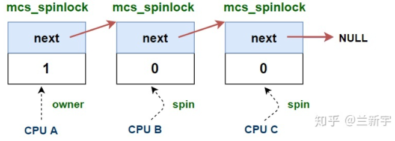 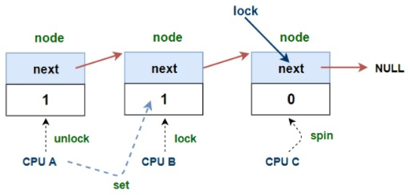
Details refer to: https://zhuanlan.zhihu.com/p/89058726
缺点：
MCS lock的实现保留在了Linux的代码中，but it is not used at all!
因为相比起Linux中只占4个字节的ticket spinlock，MCS lock多了一个指针，要多占4（或者8）个字节，消耗的存储空间是原来的2-3倍。
qspinlock
在Linux中，如果针对某个处理器架构的代码没有单独定义，qspinlock将是spinlock默认的实现方式。
#define arch_spin_lock(l) queued_spin_lock(l)
对于设计合理的spinlock，在大多数情况下，锁的争抢都不应该太激烈。这也是qspinlock中加入"pending"位域的意义，如果是两个CPU试图获取锁，那么第二个CPU只需要简单地设置"pending"为1，而不用「另起炉灶」创建一个MCS node。
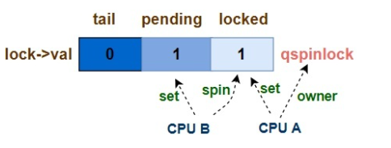
当有3个以上的CPU试图获取锁，需要一个qspinlock加上(N-2)个MCS node。
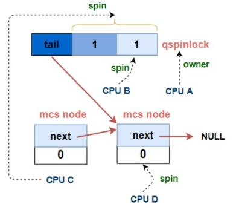
Details refer to: https://zhuanlan.zhihu.com/p/100546935
Code in /include/asm-generic/qspinlock_types.h and /include/asm-generic/qspinlock.h
Writer starve problem.
现在的内核开发已经不建议再使用rwlock了，之前的Linux代码中使用到的rwlock也在逐渐被移除，或者替换为普通的spinlock或者RCU。
It provides a simple mechanism for reading and writing shared data.
defined in /include/linux/seqlock.h
typedef struct {
struct seqcount seqcount;
spinlock_t lock;
} seqlock_t;
Writer:
reader:
Seq locks are ideal when your locking needs meet most or all these requirements:
在Linux中的一个重要应用就是表示时间的jiffies（jiffies记录了系统启动后的时钟节拍的数目）。
do {
seq = read_seqbegin(&jiffies_lock);
ret = jiffies_64;
} while (read_seqretry(&jiffies_lock, seq));
RCU (read-copy-update) 机制是自内核2.5版本引入的（2002年10月），而后不断完善，其在Linux的locking机制中的使用占比也是逐年攀升, more than 10% in 2020.
RCU is most frequently described as a replacement for reader-writer locking. RCU is notable in that RCU readers do not directly synchronize with RCU updaters, which makes RCU read paths extremely fast, and also permits RCU readers to accomplish useful work even when running concurrently with RCU updaters.
API
rcu_read_lock()/ rcu_read_unlock(): Used by a reader to inform the reclaimer that the reader is entering an RCU read-side critical section. It is illegal to block while in an RCU read-side critical section.Conceptually just to disable preempt, no lock used here.synchronize_rcu(): Marks the end of updater code and the beginning of reclaimer code. It wait for any currently executing RCU read-side critical sections to complete. The length of this wait is known as a "grace period".
call_rcu(): The asynchronous, callback form of synchronize_rcu(), Instead of blocking, it registers a function and argument which are invoked after the grace period.rcu_assign_pointer(): The updater uses this function to assign a new value to an RCU-protected pointer, it executes a memory-barrier instruction.
rcu_assign_pointer() is most frequently used indirectly, via the rcu list-manipulation primitives such as list_add_rcu().rcu_dereference: The reader uses rcu_dereference() to fetch an RCU-protected pointer, which returns a value that may then be safely dereferenced before the critical section ends.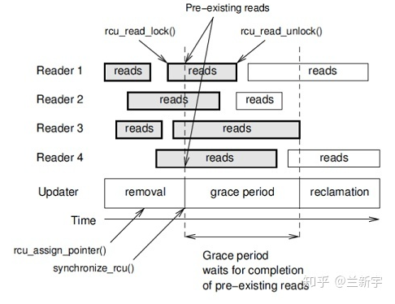
以链表的"replace"操作为例:
作为updater，在对copy的数据更新完成后，需要通过rcu_assign_pointer()，用这个copy替换原节点在链表中的位置，并移除对原节点的引用，而后调用synchronize_rcu()或call_rcu()进入grace period。因为synchronize_rcu()会阻塞等待，所以只能在进程上下文中使用，而call_rcu()可在中断上下文中使用。
作为reader，在调用rcu_read_lock()进入临界区后，因为所使用的节点可能被updater解除引用，因而需要通过rcu_dereference()保留一份对这个节点的指针指向。进入grace period意味着数据已经更新，而这些reader在退出临界区之前，只能使用旧的数据，也就是说，它们需要暂时忍受“过时”的数据，不过这在很多情况下是没有多大影响的。
作为reclaimer，对于所有进入grace period之前就进入临界区的reader，需要等待它们都调用了rcu_read_unlock()退出临界区，之后grace period结束，原节点所在的内存区域被释放。
传统的 RCU，它对读取一侧的临界区的要求同 spinlock 一样，不能睡眠/阻塞。如果允许读取一侧临界区的睡眠，那 GP 可能会变得很长/不能结束，那作为 writer 就不能释放旧数据所占据的内存资源, 甚至有内存耗尽的风险。但是对于可抢占的内核，从实时性的角度，“不能调度”将可能导致高优先级的任务被低优先级的任务阻塞，得不到执行。
"sleepable RCU"(SRCU)着力点主要是如何减少需要等待 GP 后才能释放的内存总量。
SRCU 和 Preemptible RCU 都允许临界区内的抢占，因而不能通过线程切换来判断临界区的结束，而是需要在进入/退出临界区时加/减一个 counter，借助 counter 的值来判断是否已退出。
reference: https://lwn.net/Articles/253651/
defined in include/linux/mutex.h
struct mutex {
atomic_long_t owner;
spinlock_t wait_lock;
struct list_head wait_list;
};
it includes
wait_lock)wait_list)owner contains 'struct task_struct *' to the current lock owner. Since task_struct pointers are aligned at at least L1_CACHE_BYTES, low bits (3) are used to store extra state (e.g.,if wait_list is non-empty).osqWhen acquiring a mutex, there are three possible paths that can be taken, depending on the state of the lock:
fastpath: tries to atomically acquire the lock by cmpxchg()ing the owner with
the current task. This only works in the uncontended case (cmpxchg() checks
against 0UL, so all 3 state bits above have to be 0). If the lock is
contended it goes to the next possible path.
midpath: aka optimistic spinning, tries to spin for acquisition
while the lock owner is running and there are no other tasks ready
to run that have higher priority (need_resched). The rationale is
that if the lock owner is running, it is likely to release the lock
soon. The mutex spinners are queued up using MCS lock so that only
one spinner can compete for the mutex. CONFIG_MUTEX_SPIN_ON_OWNER kernel config needs to be set to enable spinner.
An important feature of the customized MCS lock is that spinners are able to exit the MCS spinlock queue when they need to reschedule. This enables MCS spinners that need to reschedule to go directly to slowpath upon obtaining the MCS lock.
Another behavior is if the lock owner is preempted during critical section, then the spinners are moved to wait_list and block.
slowpath: last resort, if the lock is still unable to be acquired, the task is added to the wait-queue and sleeps until woken up by the unlock path. This is called waiter. Under normal circumstances it blocks as TASK_INTERRUPTIBLE.
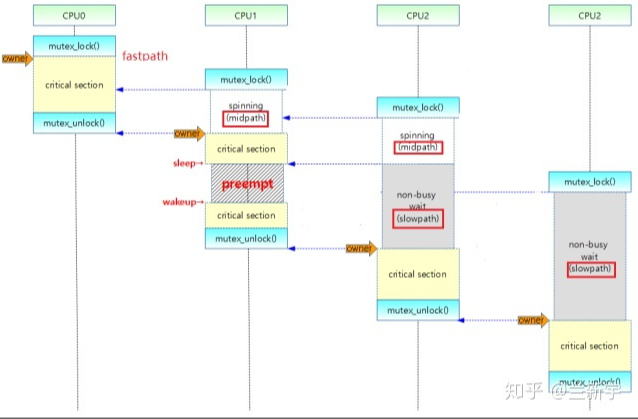
overly-optimistic spinning issue
That optimistic spinning allows the transfer of the mutex without going through a sleep/wakeup cycle, and, importantly, it gives the mutex to a running (and, thus, cache-hot) thread. The result is an unfair, but better-performing mutex implementation. In the worst case though, an unlucky thread contending for a highly contended mutex could be starved for a long time.
The solution is: If the ownership of a mutex changes while a thread is spinning, that means that mutex was released and somebody else grabbed it first. In other words, there is heavy contention and multiple CPUs are spinning in a race. In such cases, it makes sense to just go to sleep and wait until things calm down a bit.
spinlock的开销在于暂时获取不到锁时，对所在CPU的持续占有，而传统的mutex的开销则在于释放CPU和重新获取CPU所带来的上下文切换。不过，现在的mutex设计已经通过optimistic spinning糅合了spinlock的行为，在资源不足时是否主动让出CPU已经不再构成两者真正的区别。
两者语义上的差异（或者说spinlock和mutex能同时存在的原因）是在线程试图获取和持有spinlock期间，调度都是关闭的，因而要求临界区的执行时间必须较短。相比而言，使用mutex的限制条件更加宽松。如果支持的操作可能会导致睡眠，比如copy_from_user()或者kmalloc(GFP_KERNEL)，则只能使用mutex。
In Linux, Semaphore definitions is similar to mutex
struct semaphore {
raw_spinlock_t lock;
unsigned int count;
struct list_head wait_list;
};
semaphore是没有"owner"的，它只需要一个标识共享资源数目的"count"，因而也被称为counting semaphore。
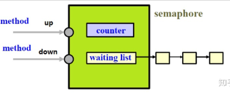
获取semaphore
down()。因为可能进入休眠等待，不能被signal打断，所有一般调用down_interruptible()。释放semaphore
up()即可（因为释放semaphore不会进入睡眠等待）从某种意义上来说，mutex可以被视作是一种"count"值只能为0和1的特殊semaphore，也就是binary semaphore(二值信号量)。但严格地来将，mutex和binary semaphore还是存在一些区别的。
semaphore已经不能算是一种锁了，对于像mutex这样真正的锁，必须遵循“解铃还须系铃人”的原则，也就是“谁占有谁释放”。这在一定程度上限制了mutex的使用，比如一些内核和用户空间之间的交互，但同时也更不容易出错。
synchronization between two tasks in the kernel when one task needs to signal to the other that an event has occurred.
kernel/sched.c and kernel/fork.c.wait_for_completion(). When the initialization is complete, the waiting tasks are awakened
via a call to completion().Completion variables are represented by the struct completion type, which is defined
in <linux/completion.h>.
init_completion(struct completion *) //Initializes the given dynamically created completion variable
wait_for_completion(struct completion *) // Waits for the given completion variable to be signaled
complete(struct completion *) // Signals any waiting tasks to wake up
对于那些没有这种依赖关系的指令，CPU可以进行reorder优化。在x86中，对于同一CPU执行的load指令后接load指令（L-L），store指令后接store指令（S-S），load指令后接store指令（L-S），都是不能交换指令的执行顺序的，只有store指令后接load指令（S-L）时才可以
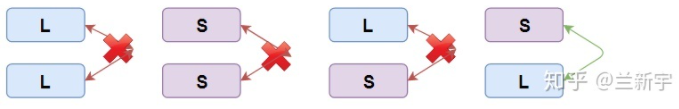
这可以理解为是“读”的优先级比“写”高，所以"load"可以跑到"store"前面去执行，而其他的三种情况，要么优先级相同，要么后面的一条指令的优先级更低。
CPU的reorder优化会导致指令的内存访问顺序与我们程序设定的顺序(program order)不一致，如果我们不希望CPU对一段指令进行reorder，就需要使用memory barrier。
Memory barriers在约束CPU行为的同时，也约束了编译器的行为，CPU都不敢reorder，编译器就更别想了，可以理解为memory barrier里隐含了compiler barrier的语义。
x86中用于设置"full memory barrier"的指令是fence。还提供了设置"write memory barrier"的sfence指令和设置"read memory barrier"的lfence指令。
Linux中提供的设置full/write/read memory barrier的API分别是mb(), wmb()和rwb()。
The rmb() method provides a read memory barrier. It ensures that no loads are reordered
across the rmb() call.That is, no loads prior to the call will be reordered to after
the call, and no loads after the call will be reordered to before the call.
The wmb() method provides a write barrier. It functions in the same manner as rmb() for stores.
The mb() call provides both a read barrier and a write barrier. No loads or stores will
be reordered across a call to mb().
The barrier() method prevents the compiler barrier from optimizing loads or stores across
the call. The previous memory barriers also function as compiler barriers, but a compiler barrier is much lighter in weight than a memory barrier.
它对应gcc的实现是这样的（定义在include/linux/compiler-gcc.h）：
/* The "volatile" is due to gcc bugs */
#define barrier() __asm__ __volatile__("": : :"memory")
它利用了末尾clobber list里的"memory"，clober list是gcc和gas(GNU Assembler)的接口，用于gas通知gcc它对寄存器和memory的修改情况。这里的"memory"就是告知gcc，在汇编代码中，我修改了内存中的内容，之前的C代码块和之后的C代码块看到的内存是不一样的，对内存的访问不能依赖于嵌入汇编之前的C代码块中寄存器的内容，所以乖乖地重新从内存读数据吧。
需要注意的是，barrier()只会对编译器的行为产生约束，它不会生成真正的指令，因此对最终CPU的指令执行没有影响。
Linux BLK is fully removed in kernel 2.6.39!
a global spin recurisve lock that was created to ease the transition from Linux’s original SMP implementation to fine-grained locking
The current time of day (the wall time) is defined in <kernel/time/timekeeping.c>:
struct timespec xtime;
The timespec data structure is defined in <linux/time.h> as:
struct timespec {
__kernel_time_t tv_sec; /* seconds */
long tv_nsec; /* nanoseconds */
};
Reading or writing the xtime variable requires the xtime_lock lock, which is a seqlock.
//To update xtime, a write seqlock is required:
write_seqlock(&xtime_lock);
/* update xtime ... */
write_sequnlock(&xtime_lock);
// Reading xtime requires the use of the read_seqbegin() and read_seqretry() functions:
// This loop repeats until the reader is assured that it read the data without an intervening write
do {
unsigned long lost;
seq = read_seqbegin(&xtime_lock);
usec = timer->get_offset();
lost = jiffies - wall_jiffies;
if (lost)
usec += lost * (1000000 / HZ);
sec = xtime.tv_sec;
usec += (xtime.tv_nsec / 1000);
} while (read_seqretry(&xtime_lock, seq));
The primary user-space interface for retrieving the wall time is gettimeofday(), which is implemented as sys_gettimeofday() in kernel/time.c:
asmlinkage long sys_gettimeofday(struct timeval *tv, struct timezone *tz)
{
if (likely(tv)) {
struct timeval ktv;
do_gettimeofday(&ktv);
if (copy_to_user(tv, &ktv, sizeof(ktv)))
return -EFAULT;
}
if (unlikely(tz)) {
if (copy_to_user(tz, &sys_tz, sizeof(sys_tz)))
return -EFAULT;
}
return 0;
}
The settimeofday() system call sets the wall time to the specified value. It requires the CAP_SYS_TIME capability.
The kernel also implements the time() system call, but gettimeofday()largely supersedes it.
The C library also provides other wall time–related library calls, such as ftime()and ctime().
Timers, sometimes called dynamic timers or kernel timers. Kernel code often needs to delay execution of some function until a later time.
A timer is easy to use. You perform some initial setup, specify an expiration time, specify a function to execute upon said expiration, and activate the timer. The given function runs after the timer expires.
timer wheels
Timers are stored in a linked list. However, it would be unwieldy for the kernel to either constantly traverse the entire list looking for expired timers (O(N) lookup), or keep the list sorted by expiration value (O(N) insertion). If it is put in rbtree, insertion will be O(log(N)).
Instead, the kernel partitions timers into five groups based on their expiration value
Timers move down through the groups as their expiration time draws closer. The partitioning ensures that the kernel has to do little work to find the expired timers.
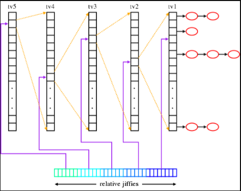
Timers are represented by struct timer_list, which is defined in <linux/timer.h>, most operations are defined here and <linux/timer.c>
struct timer_list {
struct list_head entry; /* entry in linked list of timers */
unsigned long expires; /* expiration value, in jiffies */
void (*function)(unsigned long); /* the timer handler function */
unsigned long data; /* lone argument to the handler */
struct tvec_t_base_s *base; /* internal timer field, do not touch */
};
struct timer_list my_timer;
init_timer(&my_timer);
// Now you fill out the remaining values as required:
my_timer.expires = jiffies + delay; /* timer expires in delay ticks */
my_timer.data = 0; /* zero (or any other value) is passed to the timer handler */
my_timer.function = my_function; /* function to run when timer expires */
The my_timer.expires value specifies the timeout value in absolute ticks. When the current jiffies count is equal to or greater than my_timer.expires, the handler function my_timer.function is run with the lone argument of my_timer.data.
The kernel executes timers in bottom-half context as softirqs, after the timer interrupt completes. The timer interrupt handler runs update_process_times(), which calls run_local_timers():
void run_local_timers(void)
{
hrtimer_run_queues();
raise_softirq(TIMER_SOFTIRQ); /* raise the timer softirq */
softlockup_tick();
}
Schedule_time()
This call puts your task to sleep until at least the specified time has elapsed. When the specified time has elapsed, the kernel wakes the task up and places it back on the runqueue.
It is implemented based on kernel timers.
Usage is easy:
/* set task’s state to interruptible sleep */
set_current_state(TASK_INTERRUPTIBLE);
/* take a nap and wake up in “s” seconds */
schedule_timeout(s * HZ);